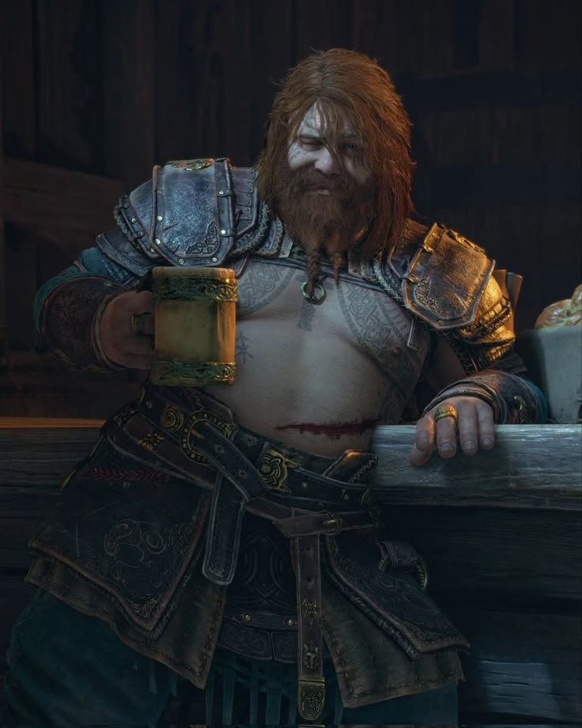

Hi there, I'm Catalina 👋
Chile

Este grupo no existía cuando nos conocímos, es más, yo estaba en otro grupo totalmente distinto a este. Hace ya mas de 7 años que se coordinó un pequeño grupo de Whatsapp para intercambiar ideas pero, francamente pensé que sería como un grupo más, cuyo tiempo de vida no sería mayor a 6 meses.
El tiempo pasó demasiado rápido, entré a la universidad, salí de la universidad, y nuestras vidas tomaron rumbos distintos.
Sin embargo, la red es el espacio donde seguimos frecuentando.
Soy astronoma de profesión, y me encanta todo lo relacionado a la cultura vikinga.
INTP